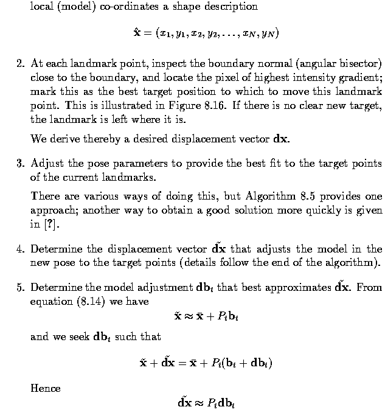

55:148 Digital Image Processing
55:247 Image Analysis and Understanding
Chapter 8, Part III
Image understanding: Point distribution models
Point distribution models
- The Point Distribution Model (PDM) is a powerful shape description technique that may
subsequently be used in locating new instances of such shapes in other images.
- It is most useful for describing features that have well understood `general' shape, but
which cannot be easily described by a rigid model.
- The PDM is a relatively recent development that has seen enormous application in a short
time.
- The PDM approach assumes the existence of a set of M examples (a training set) from
which to derive a statistical description of the shape and its variation.
- In our context, we take this to mean some number of instances of the shape represented
by a boundary (a sequence of pixel co-ordinates).
- In addition, some number N of landmark points is selected on each boundary; these
points are chosen to correspond to a feature of the underlying object.

- It is intuitively clear that if the hands so represented were in `about the same place',
so would the N landmark points be.
- Variations in the positions of these points would then be attributable to natural
variation between individuals.
- We may expect, though, that these differences would be `small' measured on the scale of
the overall shape.
- The PDM approach allows us to model these `small' differences (and, indeed, to identify
which are truly small, and which are more significant).
- Aligning the training data
- It is necessary first to align all the training shapes in an approximate sense.
- This is done by selecting for each example a suitable translation, scaling and rotation
to ensure that they all correspond as closely as possible - informally, the
transformations are chosen to reduce (in a least squares sense) the difference between an
aligned shape and a `mean' shape derived from the whole set.
- Specifically, suppose we wish to align just two shapes - each of these is described by a
vector of N co-ordinate pairs;
- A transform is composed of translation, rotation, and scaling represented by matrix R
applied to x2
- The best transform can be found by minimizing
- This minimization is a routine application of a least squares approach - partial
derivatives of E are calculated with respect to the unknowns (theta, s, tx and
ty), and set to zero, leaving simultaneous linear equations to solve.
- This general idea is used to co-align all M shapes using the following algorithm;
- Step 3 of this algorithm is necessary since otherwise it is ill-conditioned
(underconstrained); without doing this, convergence would not occur. Final convergence may
be tested by examining the differences involved in realigning the shapes to the mean.
- This approach assumes that each of the landmark points is of equal significance, but
that may not be the case. If for some reason one of them moves around the shape less than
others, it has a desirable stability that we might wish to exploit during the alignment.
This can be done by introducing a (diagonal) weight matrix W into equation 8.10
- The elements of W indicate the relative `stability' of each of the landmarks in which a
high number indicates high stability (so counts for more in the error computation), and a
low number the opposite.
- There are various ways of measuring this; one is to compute for each shape the distance
between landmarks k and l, and to let Vkl be the variance in these distances.
- A high variance would indicate high mobility, and so setting the weight for the k-th
point to
- would have the desired weighting effect.
- Deriving the model
- The outcome of the alignment will be M (mutually aligned) boundaries

- Mean shape is given by
- where
- Knowledge of this mean allows explicit measurement of the variation and co-variation
exhibited by each landmark and landmark pair; we can write
- Doing this for each training vector, we can calculate the 2N x 2N covariance matrix
- This matrix has some particularly useful properties.
- If we imagine the aligned training set plotted in 2N dimensions, it will exhibit
variation more in some directions than others (these directions will not, of course, in
general align with the co-ordinate axes) - these variations are important properties of
the shape we are describing.
- What these directions are, and their (relative) importance, may be derived from an
eigen-decomposition of S - that is, solving the equation

- Solutions to equation (8.12) provide the eigenvectors pi and eigenvalues
lambdai of S; conventionally, we assume \lambdai >= \lambdai+1.
- It can be shown that the eigenvectors associated with larger eigenvalues correspond to
the directions of larger variation in the underlying data - they provide the modes of
variation.
- Thus solving the equation and finding the highest eigenvalues tells us where the
variation in the model is most likely to occur.
- It is well known that a set of eigenvectors provides a basis, meaning that we can
represent any vector x as a linear combination of the 2N different pi. If we
write

- then for any vector x, a vector b exists such that
- where the components of b indicate how much variation is exhibited with respect to each
of the eigenvectors.
- Using the observation that the eigenvectors of lower index describe most of the changes
in the training set, we may expect that the contributions from p2N, p2N+1,
... will play a small role, thus
- will be good for sufficiently high t
- This permits a dimensional compression of the representation - if there is a lot of
structure in the data, t will be low (relative to 2N) and good shape description will be
possible very compactly by representing the shape as bt rather than x.
- One approach to this is to calculate lambdatotal, the sum of the lambdai,
and choose t such that
- The choice of alpha here will govern how much of the variation seen in the training set
can be recaptured by the compacted model.
- Further, it can be shown that the variance of bi over the training set will
be the associated lambdai; accordingly, for `well behaved' shapes we might
expect
- - that is, most of the population is within 3 sigma of the mean.
- This allows us to generate, from knowledge of P and lambdai, plausible shapes
that are not part of the training set.
Example - Metacarpal analysis
- We can illustrate this theory with an example taken from automatic hand X-ray analysis.
- The finger bones (metacarpals) have characteristic long, thin shape with bulges near the
ends - precise shape differs from individual to individual, and as an individual ages.
- Scrutiny of bone shape is of great value in diagnosing bone aging disorders and is
widely used by pediatricians.
- From a collection of X-rays, 40 landmarks (so vectors are 80 dimensional) were picked
out by hand on a number (approximately 50) of segmented metacarpals.
- Next figure illustrates (after alignment) the mean shape, together with the actual
positions of the landmark points from the entire data set.
- The covariance matrix and its eigenvectors associated with the variation are
extracted; the relative contribution of the most influential components is illustrated in
Table~\ref{tab.PDM}.
- From this we see that more than 95% of the shape variation is captured by the first
eight modes of variation.
- Next figure illustrates the effect of varying the first mode of the mean shape by up to
2.5 sqrt{lambda_1}.
- This mode, which accounts for more than 60% of the variation seen in the data, captures
the (asymmetric) thickening and thining of bones (relative to their length) which is an
obvious characteristic of maturity.
- In this example, it is clear that 2.5 is an unlikely factor for sqrt{lambda_1} since the
resulting shapes are too extreme - thus we may expect b_1 to be smaller in magnitude for
this application.
- Next figure similarly illustrates extremes of the third mode.
- The shape change here is somewhat subtler; part of what is captured is a bending (in
banana fashion) of the bone.
- Both extremes have a plausible `bone-like' look about them.
Fitting models to data
- A strength of this approach is that it permits plausible shapes to be fitted to new
data.
- Given an image in which we wish to locate an instance of a modelled shape (specifically,
given an edge map of the image, so having information about where boundaries are most
likely to lie), we require to know
- the mean shape x
- the transformation matrix P_t
- the particular shape parameter vector b_t
- the particular pose (translation, rotation, scale)
- The mean shape and the transformation matrix are known from the model construction
- The identification of b_t and the pose is an optimization problem
- locate the parameters that best fit the data at hand, subject to certain constraints.
- These constraints would include the known limits on reasonable values for the components
of b_t, and might also include domain knowledge about plausible positions for the object
to constrain the pose.
- In the metacarpal example, this would include knowledge that a bone lies within the hand
silhouette, is aligned with the finger and is of a known approximate size.
- This approach may be used successfully with a number of well known optimization
algorithms.
- It is likely, however, that convergence would be slow.
- An alternative, quicker approach is to use the PDM as the basis of an Active Shape Model
(ASM).
- Here, we iterate toward the best fit by examining an approximate fit, locating improved
positions for the landmark points, then recalculating pose and parameters.
Fitting an active shape model (ASM)

- Step 2 assumes that a suitable target can be found, which may not always be true.
- If there is none, the landmark can be left where it is, and the model constraints will
eventually pull it into a reasonable position.
- There is also the option of locating targets by more sophisticated means than simple
intensity gradient measurements.
- The algorithm is illustrated in the next figure.
- Note that the model locates the correct position despite the proximity of strong
boundaries that could distract it - this does not occur because the shape of the boundary
is tightly bound in.
Extensions
- In a short time, the literature on PDMs and ASMs has become very extensive - the
technique lends itself to a very wide range of problems, but has some drawbacks.
- The placing of the landmark points for construction of the training set is
clearly very labor intensive, and in some application error-prone.
- Automatic placing of these points has been addressed.
- Efficiency of the approach has also been enhanced by the common idea of a
multi-resolution attack.
- Using a coarse-to-fine strategy can produce benefits in both quality of final fit, and
reduction of computational load
- As presented, the approach is strictly linear in the sense that control points may only
move along a straight line (albeit with respect to directions of maximum variation);
- non-linear effects are produced by combining contributions from different modes;
- aside from being imperfect, this results in a representation that is not as compact as
it might be if the non-linear aspects were explicitly modeled.
- This problem has been addressed in two ways;
- introduction of the Polynomial Regression PDM which assumes dependence between the
modes, with minor modes being polynomial combinations of major ones, and
- extension of the linear model by permitting polar relationships between modes, thereby
efficiently capturing the ability of (parts of) objects to rotate around one another.
Last Modified: April 1, 1997